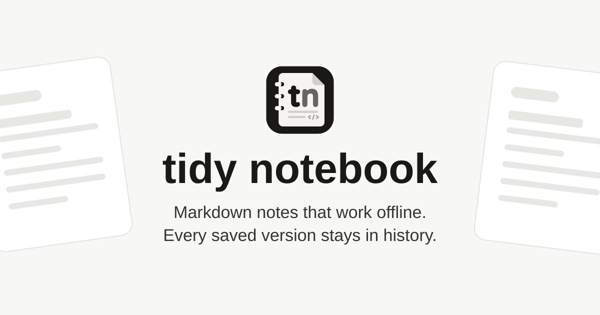
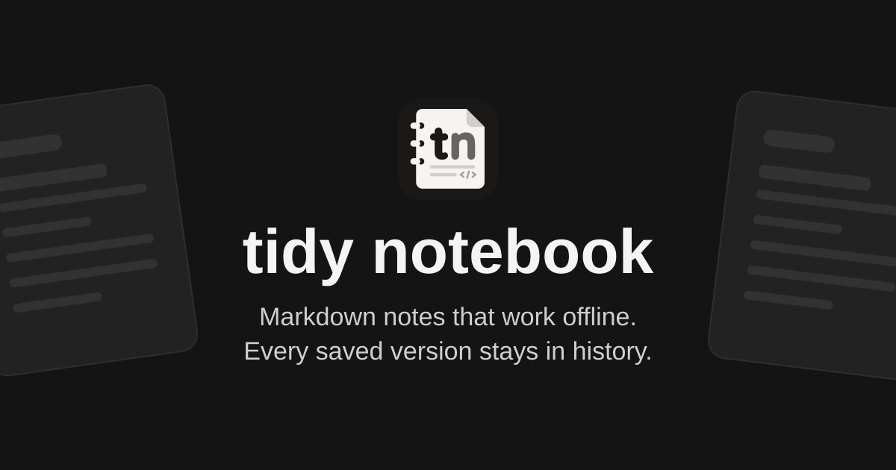

Link preview review: tidy notebook
The first scope gives one branded product card to every address of the application and to every published address, open or not. The card holds no note title, no note text, no account name, no host of the reader and no token. The server writes the same tags and the same HTML title for every address, so a revoked or locked link shows the same card as before. This promise covers the metadata only: a crawler that fetches an open published note can still read and keep the text of the page. The frames below are local drawings of each service. They are not captures of a real share, and they do not show where a click goes.
The card


The same card for every kind of address
| Shared address | Slack (classic unfurl) | Large image card (X, iMessage and others) | |
|---|---|---|---|
A private note in the applicationhttps://app.tidynotebook.com/w/7c1e…/notes/0f3c…
|
Sam 10:42 https://app.tidynotebook.com/w/7c1e…/notes/0f3c… tidy notebook tidy notebook Markdown notes that work offline. Every saved version stays in history. |
tidy notebook Markdown notes that work offline. Every saved version stays in history. app.tidynotebook.com https://app.tidynotebook.com/w/7c1e…/notes/0f3c… 10:42 |
|
An invitation link (token in the fragment)https://app.tidynotebook.com/invitation#…
|
Sam 10:42 https://app.tidynotebook.com/invitation#… tidy notebook tidy notebook Markdown notes that work offline. Every saved version stays in history. |
tidy notebook Markdown notes that work offline. Every saved version stays in history. app.tidynotebook.com https://app.tidynotebook.com/invitation#… 10:42 |
|
An open published notehttps://read.example.com/published/Tk9…
|
Sam 10:42 https://read.example.com/published/Tk9… tidy notebook tidy notebook Markdown notes that work offline. Every saved version stays in history. |
tidy notebook Markdown notes that work offline. Every saved version stays in history. read.example.com https://read.example.com/published/Tk9… 10:42 |
|
A published note with a passwordhttps://read.example.com/published/Ab2…
|
Sam 10:42 https://read.example.com/published/Ab2… tidy notebook tidy notebook Markdown notes that work offline. Every saved version stays in history. |
tidy notebook Markdown notes that work offline. Every saved version stays in history. read.example.com https://read.example.com/published/Ab2… 10:42 |
|
Proposed tags
The application shell and every state of a published page carry the same
block. Every published view also writes the product name as its HTML
title, also an open note, because a service can read the title with no
tag. A separate test holds the title. The reader still sees the note
name in the heading of the page. ORIGIN is the canonical
application origin of the configuration, never the Host header of the
request. HASH is the build digest of the card file.
<title>tidy notebook</title> <meta property="og:type" content="website"> <meta property="og:site_name" content="tidy notebook"> <meta property="og:title" content="tidy notebook"> <meta property="og:description" content="Markdown notes that work offline. Every saved version stays in history."> <meta property="og:url" content="ORIGIN/"> <meta property="og:image" content="ORIGIN/assets/social-card-HASH.png"> <meta property="og:image:type" content="image/png"> <meta property="og:image:width" content="1200"> <meta property="og:image:height" content="630"> <meta property="og:image:alt" content="tidy notebook: Markdown notes that work offline"> <meta name="twitter:card" content="summary_large_image"> <meta name="description" content="Markdown notes that work offline. Every saved version stays in history.">
og:url names the root of the application, so every share
stands for the product. A service can treat it as the canonical address
and send a click to the root. Before the runtime change is approved, a
person shares an approved public sample in Slack and in WhatsApp and
records where a click goes. If it does not reach the shared address, the
choice goes back to review, with the omission of og:url as
the first alternative.
Deferred, not approved: a title on an open published note
Deferred. Illustration only. Not part of the first scope.
An open published note could show its own name in place of the product name. The image stays the generic card, because an image keyed by the token is itself a credential address. Risks to review first:
- A service keeps the preview after the owner revokes the link or adds a password. Slack keeps an unfurl for a short time across the service, and a message keeps the preview that it showed when it was sent. The title can then outlive the publication.
- The name is written into a public response for each crawler. A change of the name, a password or a revocation does not reach a preview that was already shown.
- It undoes the generic HTML title of the first scope, and no service document promises which of the title and the tags it reads.
Sam 10:42
https://read.example.com/published/Tk9…
tidy notebook
Trip plan for October
A published note on tidy notebook.